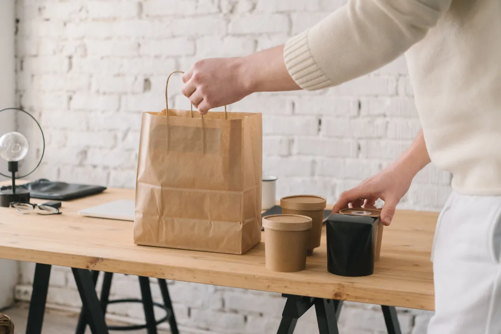
Geen rij, geen wachten
Klaar op jouw tijd
Kies bij het bestellen zelf het kwartier dat jou uitkomt. Je loopt binnen, je pakt je tas, je bent weg.
Turkse streetfood · bij Sonay Supermarkt

Geen rij, geen wachten
Kies bij het bestellen zelf het kwartier dat jou uitkomt. Je loopt binnen, je pakt je tas, je bent weg.
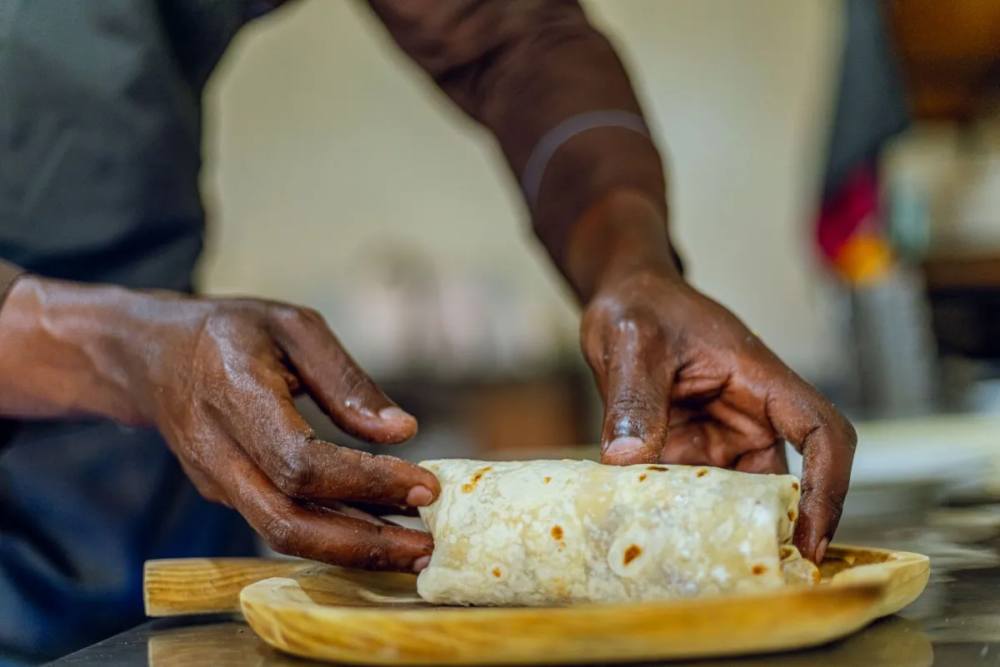
Op bestelling gedraaid
Je wrap wordt pas gerold als je bestelling binnen is, met groenten die dezelfde dag gesneden zijn.

Online is een extra
Liever gewoon aan de balie kiezen? Dat kan elke dag behalve zondag, van 12.00 tot 22.00 uur.
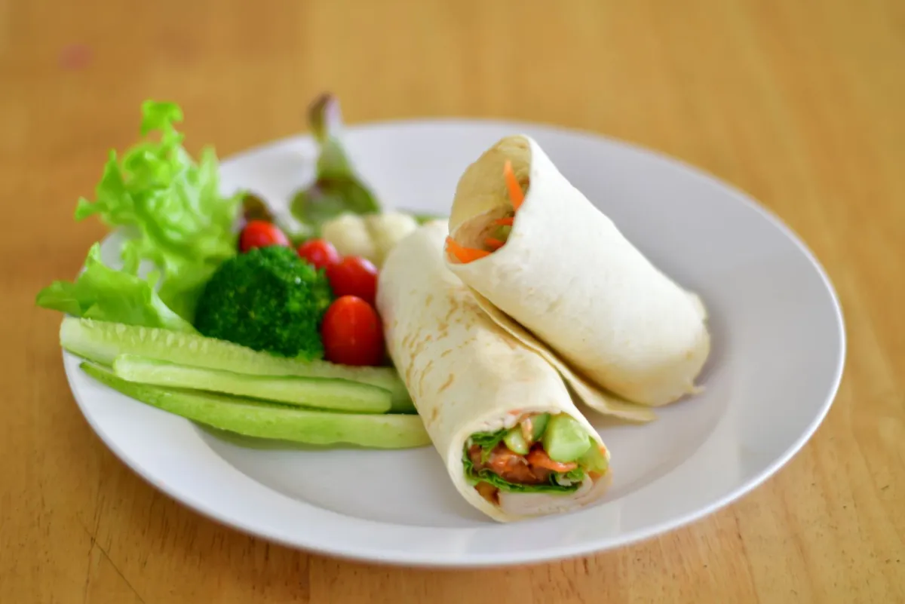
100 gram çiğ köfte, lavas, groenten en granaatappelsaus.
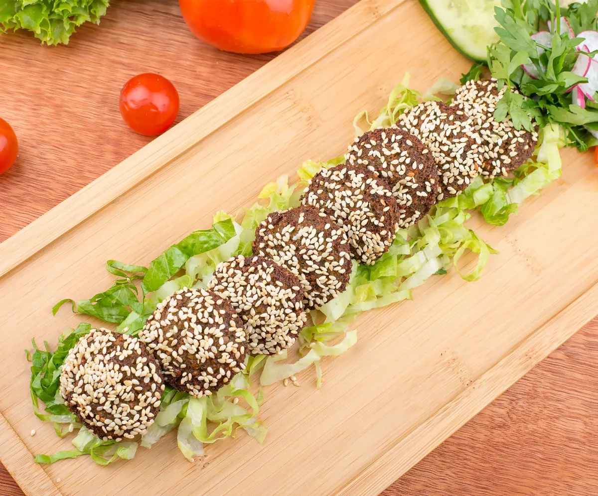
Dezelfde wrap, 150 gram. Voor de echte honger.
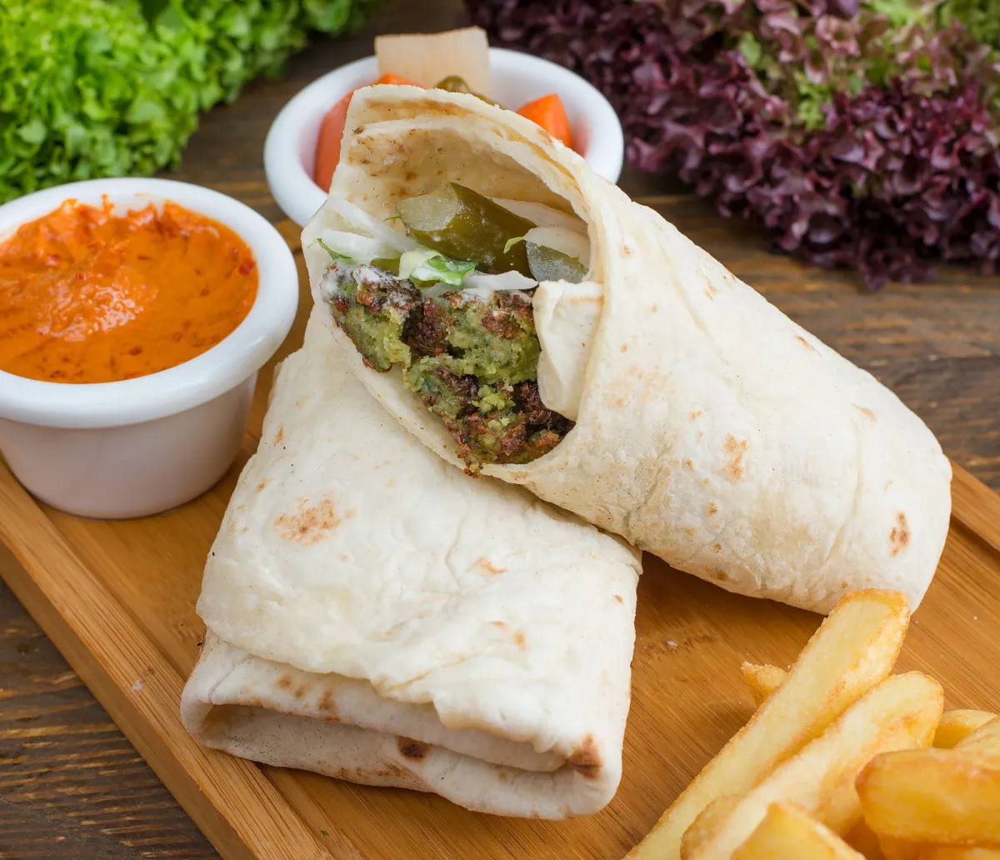
Drie krokante falafels, groenten en granaatappelsaus.
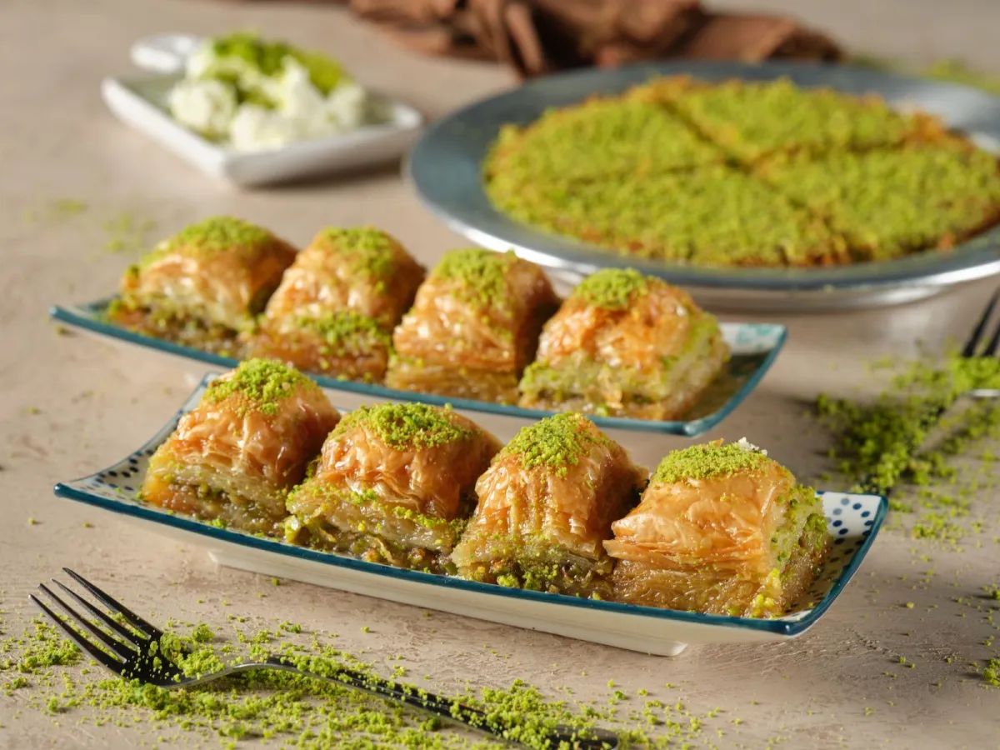
Drie stuks, zoet en plakkerig zoals het hoort.
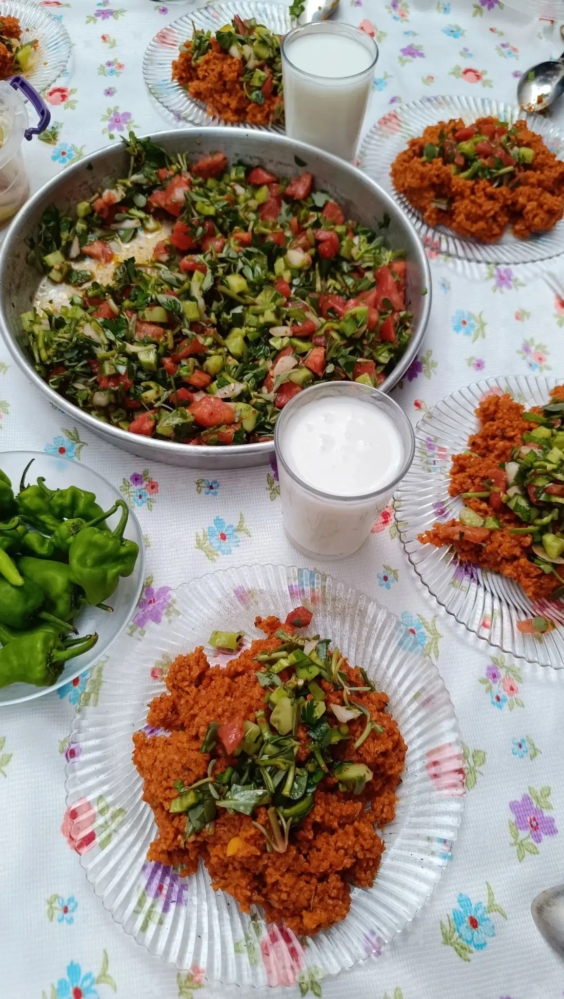
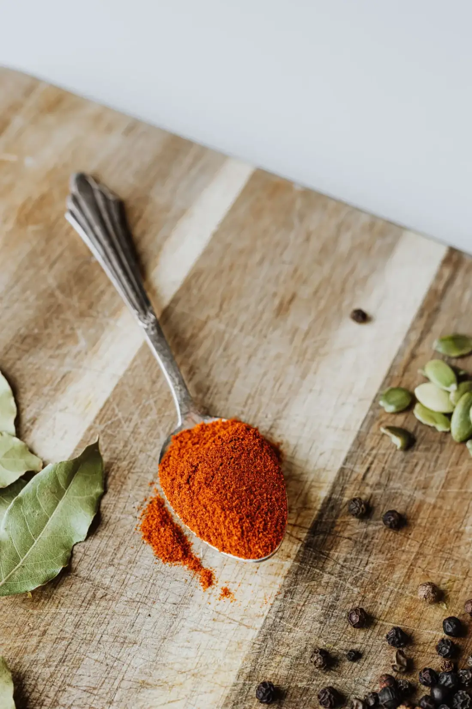
"Fantastisch vriendelijke mensen, lekker eten en prima te betalen. Ik eet er wekelijks!"
Wes de Lange ★★★★★
Çiğköftem maakt al sinds 1993 çiğ köfte, inmiddels op honderden plekken in twaalf landen. In Den Bosch vind je ons bij Sonay Supermarkt: klein, zonder poespas, en precies daarom goed. Je wrap wordt voor je neus gedraaid en binnen een kwartier sta je weer buiten.
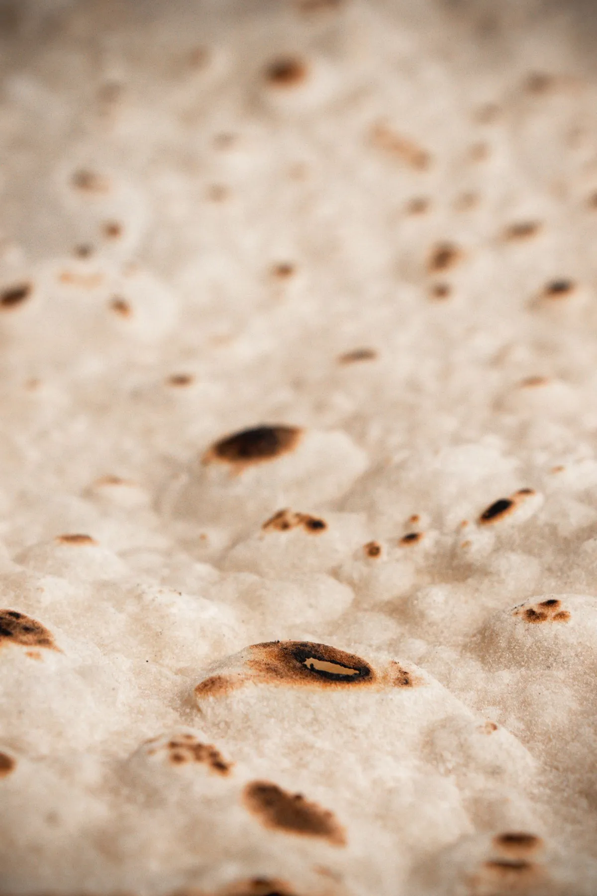
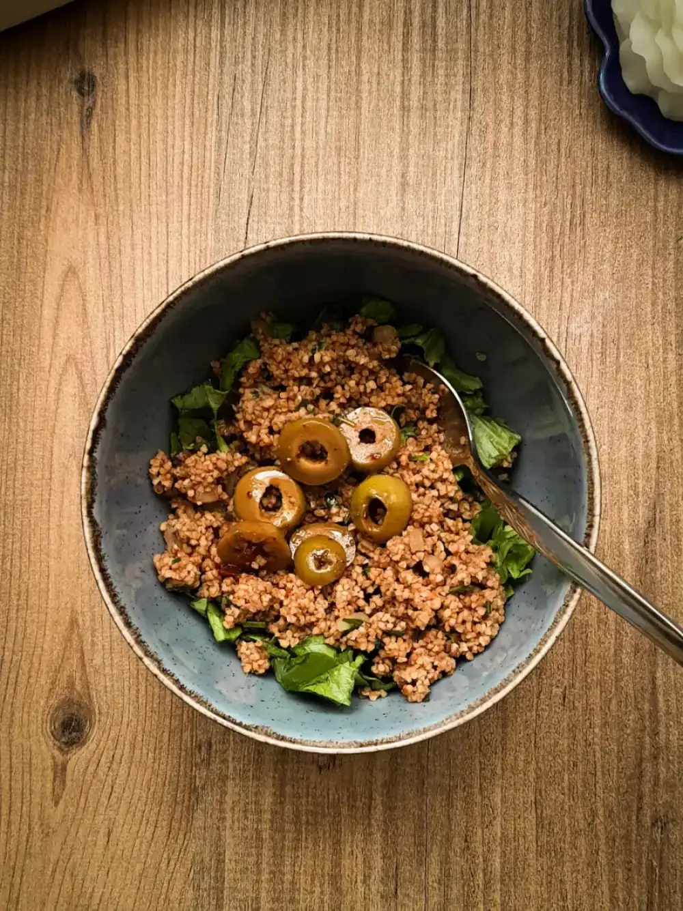
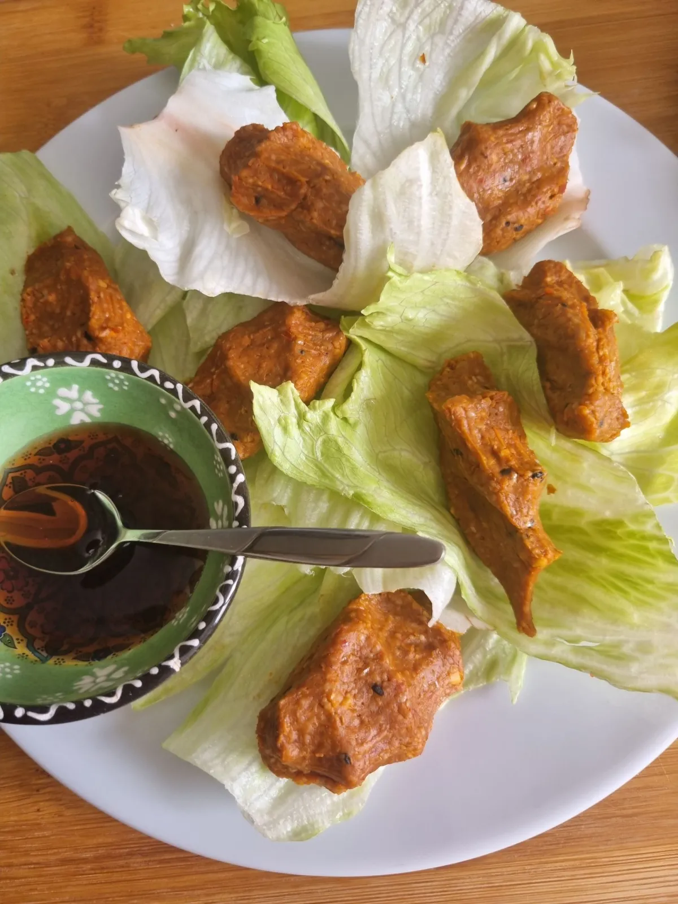
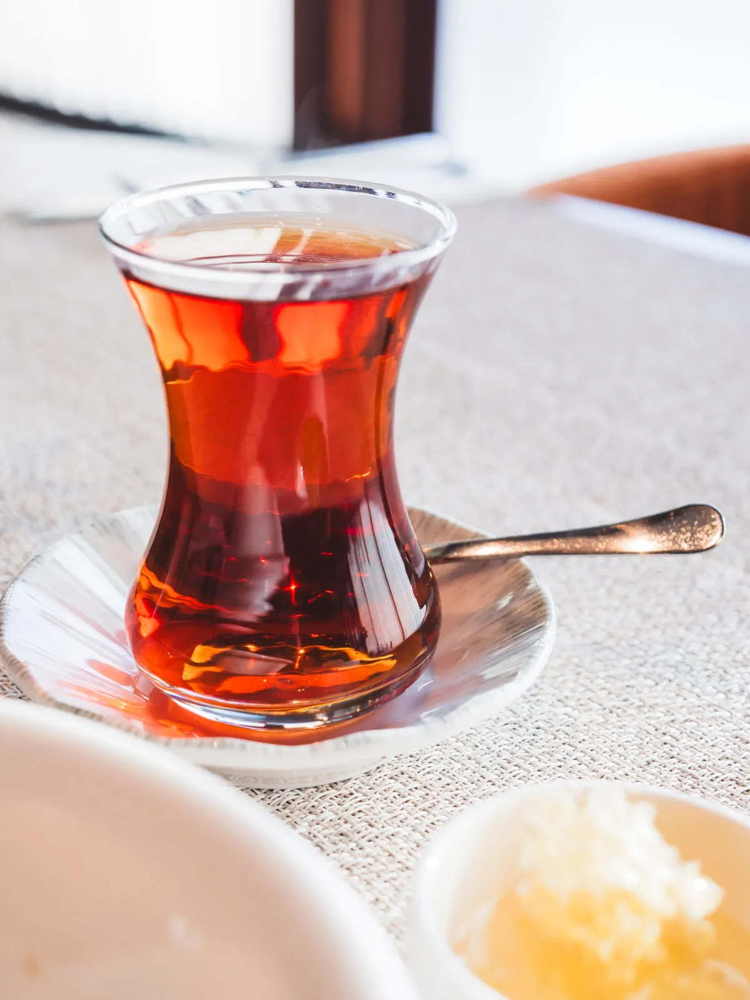
De wrap is een heerlijk gezond en vega alternatief voor fastfood. Alles is altijd supervers.
Zo blij dat er een vegan alternatief is voor een van de Turkse gerechten. Na één keer proberen was ik verkocht.
Fantastisch vriendelijke mensen, lekker eten en prima te betalen. Ik eet er wekelijks!
Lekkere çiğ köfte! Sappig, volle smaak, met veel groenten en kruiden.
Heerlijk en betaalbaar. Alles is vegan en wordt vers bereid.
Altijd vriendelijk, altijd lekker! Ik kom er regelmatig.
De beste falafel die ik in Den Bosch en Eindhoven heb gegeten.
Bestel altijd de wrap. Erg betaalbaar en veganistisch. Zeker een aanrader als je van goed gekruid eten houdt.
Veertig items online, met alle prijzen erbij. Van de wrap tot een familiepakket.
Zo snel mogelijk (± 15 minuten) of op het kwartier dat jou uitkomt. Afhalen of bezorgen.
Je bestelling staat klaar aan de Christiaan Huygensweg. Betalen met pin of contant.
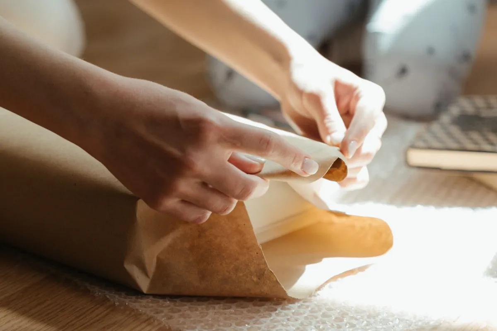
Bestel online en je wrap staat klaar op de tijd die jij kiest. Binnenlopen aan de Christiaan Huygensweg kan natuurlijk ook altijd.